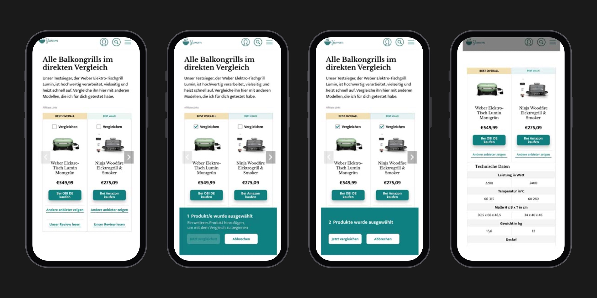
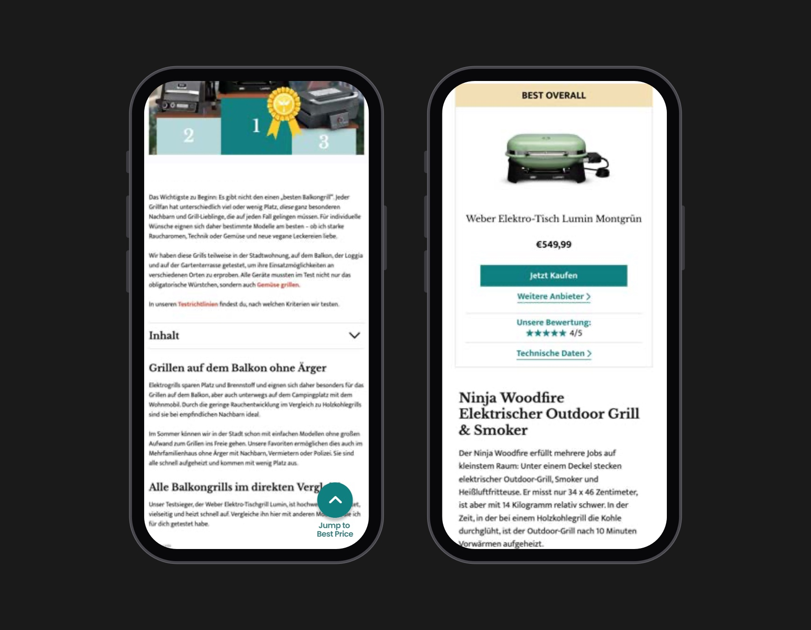
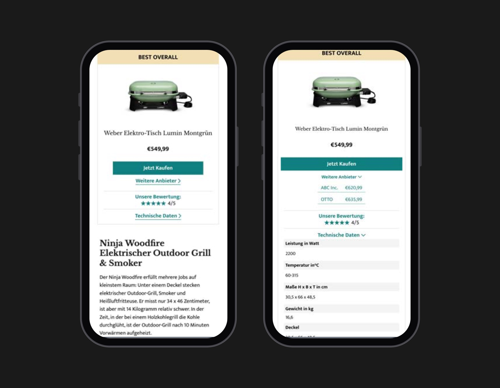

Media / Publishing · 2024
yumm
Optimizing an affiliate product page for trust and conversion
Problem
yumm is a German food and cooking publisher that earns money through affiliate links in its buying guides. Its electric grill guide brought in search traffic from people with one question: which electric grill should I buy?
But every product card looked the same, buy buttons appeared before there was any reason to trust them, and on mobile the guide turned into a long scroll. People skimmed, hesitated at the links and left before reaching the lower-ranked grills, which cost clicks and affiliate revenue.
Research
I combined a heuristic evaluation against Nielsen's heuristics with interviews and a usability test. Participants, most of whom cook every day, had to find the best grill for a family of four, find the cheapest reliable option, and choose one they'd buy themselves.
- 25Participants
- 6.2%Buy button CTR
- €0.18Revenue per visitor
Participants liked the editorial tone and the detailed product information. The problems were hierarchy, trust and length: they couldn't tell the best, budget and premium picks apart, the links felt like advertising, and on mobile the decision sat too far down the page.
"Everything looks kind of the same, so I can't tell right away which model is actually the best."
"I'm not sure if this is an honest recommendation or just advertising."
Insight
People trusted the writing but not the ranking: the page asked them to click before it showed them why.
Making
A quick comparison at the top
I placed a comparison module near the top of the guide, with color-coded badges (Best Overall, Best Value) and checkboxes to compare two grills side by side in a spec table, instead of a long list of identical cards. Participants couldn't tell which grill was best, cheapest or premium, and asked to see the differences without reading every section.


A sticky "Jump to Best Price" button on mobile
A persistent button jumps straight to the top pick and its price, instead of buy buttons that only live inside each card. On mobile those buttons scrolled out of view, and participants said they had to scroll too far before they could decide anything.

Compact product cards
Each card now shows the badge, product, price, one main buy button and the rating, with other sellers and technical data folded into accordions, instead of everything expanded at once. Large blocks of text made the page hard to scan and slowed decisions.


Outcome
- 48% → 68%Task success
- 6.2% → 12.5%Buy button CTR
- 2.1% → 4.3%Mobile conversion
- €0.18 → €0.36Revenue per visitor
More people reached the end of the guide: scroll depth past 75% went from 24% to 40%, and time on page rose from 1:42 to 2:35.
Some users still questioned the ranking, so next I'd show the testing criteria and scoring method, and add picks by need, like best for balconies, for families or under €100.
.say hello
Hiring a product designer who brings AI into the process? Let's talk.
mark.albaran [at] outlook.com
LinkedIn (opens in a new tab)